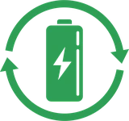

Siempre pasa a la hora
más inoportuna.
Se acabó el pan y en 20 minutos hay que salir.
La comida del perro se terminó justo hoy.
Antojo de algo dulce y todo está cerrado.
De domicilio por una gaseosa de $3.500.
El problema no es el producto. Es el acceso.
La alacena auxiliar
del conjunto.
Un minimercado compacto instalado dentro de la unidad, con un surtido pensado para resolver lo cotidiano: mecato, bebidas frías, panadería básica, alimentos para mascotas, aseo personal, dulces, helados y artículos del hogar.
No buscamos variedad infinita. Buscamos que lo que se necesita, esté.
Mercado honesto
Sin personal, sin vitrinas cerradas. Funciona porque la comunidad lo cuida y nosotros lo mantenemos.
Operación directa
No vendemos franquicias. Cada punto lo instalamos, surtimos y respondemos nosotros.
Surtido a la medida
El inventario se ajusta al consumo real de cada unidad, con los datos de venta del propio punto.
Abierto 24/7
Las necesidades no tienen horario. El punto tampoco.
Sin filas. Sin cajero. Sin fricción.
Toma
El residente baja y toma lo que necesita de la estantería.
Escanea
Pasa el código del producto por el datáfono inteligente.
Paga
Ve su carrito con precios a la vista y paga con tarjeta.
Listo
Sube a su apartamento. Todo tomó menos de dos minutos.
Detrás: software propio, inventario controlado en tiempo real, reposición programada y cámaras en el punto.
El mercado que
vive contigo.
Está presente, responde cuando falta algo y aporta tranquilidad en el día a día. Cercano, honesto y confiable, como un buen vecino.
Él es Mark, el guardián del tiempo de MinuteMark. Vive en el conjunto, está atento a lo que falta en casa y aparece justo a tiempo.
Cuéntanos de tu unidad.
Cada conjunto es distinto. Estas cuatro preguntas nos ayudan a llegar preparados a la reunión y a pensar el punto pensando en tu unidad, no en una plantilla.
Toma un minuto. Contestamos el mismo día hábil.
Gracias por contarnos.
Con esa info llegamos preparados. Te escribimos el mismo día hábil por WhatsApp para coordinar la reunión.
Detrás de cada estantería,
marcas que ya conoces.
Trabajamos con los principales distribuidores del país. Eso nos permite ofrecer un surtido variado, con productos reconocidos, a precios coherentes con el mercado.
Distribuidores aliados
Las casas que abastecen nuestros puntos.
Marcas del surtido
Algunas de las que encuentras en el punto.
El surtido se ajusta al consumo real de cada unidad; marcas ilustrativas, no exhaustivas. Todas las marcas y logos son propiedad de sus respectivos dueños.
Cada punto deja algo
en la comunidad.
MinuteMark no es solo un mercado. Cada instalación incluye dos puntos de aporte a la comunidad que las unidades normalmente no tienen.
Fundación SANAR
Cada instalación incluye una caja de recolección de tapas plásticas para apoyar a niños con cáncer. La comunidad aporta sin costo y sin esfuerzo.

Recolección de pilas
Un contenedor de pilas resuelve un problema ambiental que casi ninguna unidad tiene cómo manejar hoy, evitando que terminen en la basura ordinaria.
Vivimos en unidades residenciales. De ahí salió esto.
Somos socios de Medellín. MinuteMark nació resolviendo algo que nos pasaba a nosotros. Cada punto lo instalamos, surtimos y respondemos nosotros mismos —no delegamos la operación a terceros—, y eso nos permite conocer de primera mano cada unidad, cada administración y cada comunidad donde entramos.
Y cuando decimos cero inversión para la unidad, lo decimos en serio: cada punto además genera una comisión mensual para la copropiedad. Los detalles los conversamos en la reunión.
Llevemos MinuteMark
a tu unidad.
Cuéntanos de tu conjunto y coordinamos una presentación para la administración o el consejo. Sin compromiso y sin costo.
¿Eres residente y quieres uno en tu edificio? También escríbenos: nos encargamos de hablar con tu administración.
Gracias.
Recibimos tus datos. Te escribimos por WhatsApp para coordinar la presentación.
Lo que siempre nos preguntan
en el consejo.
¿Y si se roban los productos?
Es la primera pregunta que sale y es válida. El mercado honesto siempre tiene un porcentaje de pérdida y está contemplado en nuestros números: el riesgo lo asumimos nosotros, no la copropiedad. Lo reducimos con cámaras en el punto, comunicación clara dentro de la unidad y una relación cercana con portería. En la práctica, cuando la comunidad siente el mercado como propio, lo cuida.
¿Qué pasa si el espacio se ve descuidado?
La reposición es periódica y el punto se revisa en cada visita: surtido, limpieza del mobiliario, fechas de vencimiento y estado de los equipos. La administración tiene línea directa con los socios para cualquier ajuste. Nuestro trabajo empieza cuando el punto queda instalado, no cuando se firma.
¿Cómo se ve el punto? ¿Encaja en el lobby?
El diseño de cada punto se adapta al estilo y las dimensiones del espacio disponible en tu unidad. Buscamos que se sienta parte del edificio —no un objeto extraño en el lobby— y que sume a la percepción de modernidad de la unidad, no que reste. En la reunión te mostramos referencias visuales para que puedas imaginártelo en tu propia unidad.
¿Cuánto se demora la instalación?
Después de la aprobación del consejo y la firma del acuerdo, el montaje del punto —estantería, refrigeración, datáfono, señalización y las cajas de tapas y pilas— se hace en una sola jornada. Al día siguiente, la unidad ya tiene su MinuteMark funcionando.